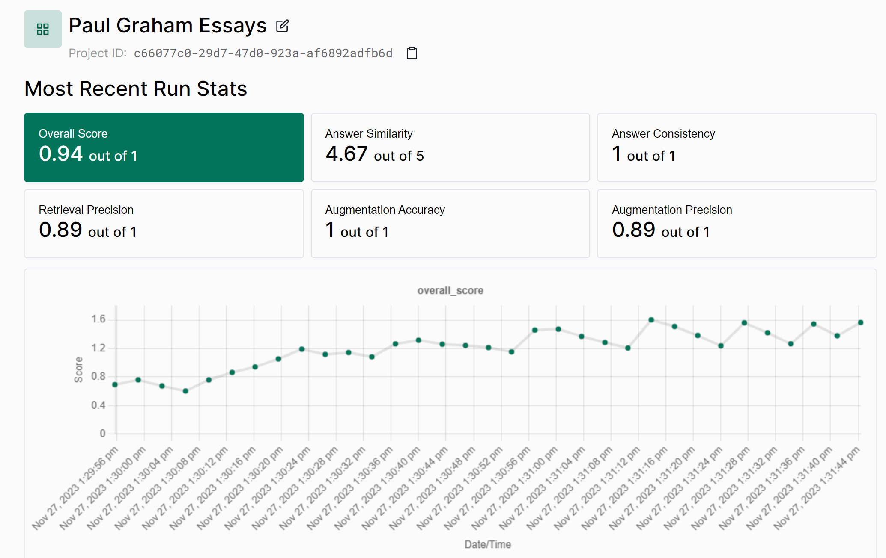

Tonic Validate#
Tonic Validate 是什么#
Tonic Validate 是一款面向检索增强生成（RAG）系统开发者的工具，用于评估系统性能。您可以使用 Tonic Validate 对 LlamaIndex 配置进行一次性性能抽查，也可将其集成到现有 CI/CD 系统（如 Github Actions）中。Tonic Validate 包含两个组成部分：
- 开源 SDK
- Web 用户界面
您可以选择单独使用 SDK 而不使用 Web UI。SDK 包含评估 RAG 系统所需的全部工具。Web UI 的作用是在 SDK 基础上提供可视化层，让您能更直观地了解系统性能，而非仅查看原始数据。
如需使用 Web UI，请访问此处注册免费账户。
如何使用 Tonic Validate#
安装配置#
通过以下命令安装 Tonic Validate：
pip install tonic-validate
使用 Tonic Validate 需提供 OpenAI 密钥，因为评分计算依赖后端 LLM。可通过设置环境变量 OPENAI_API_KEY 来配置：
import os
os.environ["OPENAI_API_KEY"] = "put-your-openai-api-key-here"
如需将结果上传至 UI，请确保设置从 Web UI 账户获取的 API 密钥。未注册账户可前往此处注册。获取 API 密钥后通过环境变量设置：
import os
os.environ["TONIC_VALIDATE_API_KEY"] = "put-your-validate-api-key-here"
单问题评估示例#
本例展示问题与参考答案不匹配的情况，检索到的两个上下文块中有一个包含正确答案：
question = "What makes Sam Altman a good founder?"
reference_answer = "He is smart and has a great force of will."
llm_answer = "He is a good founder because he is smart."
retrieved_context_list = [
"Sam Altman is a good founder. He is very smart.",
"What makes Sam Altman such a good founder is his great force of will.",
]
答案相似度评分（0-5分）衡量 LLM 答案与参考答案的匹配程度。本例中未完全匹配，故得分非满分5分：
answer_similarity_evaluator = AnswerSimilarityEvaluator()
score = await answer_similarity_evaluator.aevaluate(
question,
llm_answer,
retrieved_context_list,
reference_response=reference_answer,
)
print(score)
# >> EvaluationResult(query='What makes Sam Altman a good founder?', contexts=['Sam Altman is a good founder. He is very smart.', 'What makes Sam Altman such a good founder is his great force of will.'], response='He is a good founder because he is smart.', passing=None, feedback=None, score=4.0, pairwise_source=None, invalid_result=False, invalid_reason=None)
答案一致性评分（0.0-1.0）检测答案是否包含检索上下文外的信息。本例答案完全来自上下文，故得1分：
answer_consistency_evaluator = AnswerConsistencyEvaluator()
score = await answer_consistency_evaluator.aevaluate(
question, llm_answer, retrieved_context_list
)
print(score)
# >> EvaluationResult(query='What makes Sam Altman a good founder?', contexts=['Sam Altman is a good founder. He is very smart.', 'What makes Sam Altman such a good founder is his great force of will.'], response='He is a good founder because he is smart.', passing=None, feedback=None, score=1.0, pairwise_source=None, invalid_result=False, invalid_reason=None)
增强准确率衡量答案包含检索上下文的百分比。本例包含50%上下文，故得0.5分：
augmentation_accuracy_evaluator = AugmentationAccuracyEvaluator()
score = await augmentation_accuracy_evaluator.aevaluate(
question, llm_answer, retrieved_context_list
)
print(score)
# >> EvaluationResult(query='What makes Sam Altman a good founder?', contexts=['Sam Altman is a good founder. He is very smart.', 'What makes Sam Altman such a good founder is his great force of will.'], response='He is a good founder because he is smart.', passing=None, feedback=None, score=0.5, pairwise_source=None, invalid_result=False, invalid_reason=None)
增强精确率检测相关检索内容是否进入答案。本例两个上下文均相关但仅一个被采用，故得0.5分：
augmentation_precision_evaluator = AugmentationPrecisionEvaluator()
score = await augmentation_precision_evaluator.aevaluate(
question, llm_answer, retrieved_context_list
)
print(score)
# >> EvaluationResult(query='What makes Sam Altman a good founder?', contexts=['Sam Altman is a good founder. He is very smart.', 'What makes Sam Altman such a good founder is his great force of will.'], response='He is a good founder because he is smart.', passing=None, feedback=None, score=0.5, pairwise_source=None, invalid_result=False, invalid_reason=None)
检索精确率衡量检索上下文与问题的相关度。本例两个上下文均相关，故得1.0分：
retrieval_precision_evaluator = RetrievalPrecisionEvaluator()
score = await retrieval_precision_evaluator.aevaluate(
question, llm_answer, retrieved_context_list
)
print(score)
# >> EvaluationResult(query='What makes Sam Altman a good founder?', contexts=['Sam Altman is a good founder. He is very smart.', 'What makes Sam Altman such a good founder is his great force of will.'], response='He is a good founder because he is smart.', passing=None, feedback=None, score=1.0, pairwise_source=None, invalid_result=False, invalid_reason=None)
TonicValidateEvaluator 可一次性计算所有指标：
tonic_validate_evaluator = TonicValidateEvaluator()
scores = await tonic_validate_evaluator.aevaluate(
question,
llm_answer,
retrieved_context_list,
reference_response=reference_answer,
)
print(scores.score_dict)
# >> {
# 'answer_consistency': 1.0,
# 'answer_similarity': 4.0,
# 'augmentation_accuracy': 0.5,
# 'augmentation_precision': 0.5,
# 'retrieval_precision': 1.0
# }
批量问题评估#
通过 TonicValidateEvaluator 可评估多个查询，生成可上传至 Tonic Validate UI 的 Run 对象：
questions = ["What is the capital of France?", "What is the capital of Spain?"]
reference_answers = ["Paris", "Madrid"]
llm_answer = ["Paris", "Madrid"]
retrieved_context_lists = [
[
"Paris is the capital and most populous city of France.",
"Paris, France's capital, is a major European city and a global center for art, fashion, gastronomy and culture.",
],
[
"Madrid is the capital and largest city of Spain.",
"Madrid, Spain's central capital, is a city of elegant boulevards and expansive, manicured parks such as the Buen Retiro.",
],
]
tonic_validate_evaluator = TonicValidateEvaluator()
scores = await tonic_validate_evaluator.aevaluate_run(
[questions], [llm_answers], [retrieved_context_lists], [reference_answers]
)
print(scores.run_data[0].scores)
# >> {
# 'answer_consistency': 1.0,
# 'answer_similarity': 3.0,
# 'augmentation_accuracy': 0.5,
# 'augmentation_precision': 0.5,
# 'retrieval_precision': 1.0
# }
结果上传至 UI#
上传前请确保已按安装配置设置 TONIC_VALIDATE_API_KEY 并创建 UI 项目。初始化 API 后上传结果：
validate_api = ValidateApi()
project_id = "your-project-id"
validate_api.upload_run(project_id, scores)
即可在 Tonic Validate UI 查看结果！

端到端示例#
以下展示与 Llama Index 的集成使用。首先通过 CLI 下载数据集：
llamaindex-cli download-llamadataset EvaluatingLlmSurveyPaperDataset --download-dir ./data
创建 llama.py 文件并初始化 Llama Index：
from llama_index.core import SimpleDirectoryReader
from llama_index.core import VectorStoreIndex
documents = SimpleDirectoryReader(input_dir="./data/source_files").load_data()
index = VectorStoreIndex.from_documents(documents=documents)
query_engine = index.as_query_engine()
加载测试问题集：
from llama_index.core.llama_dataset import LabelledRagDataset
rag_dataset = LabelledRagDataset.from_json("./data/rag_dataset.json")
# 仅测试10个问题以避免耗时过长
questions = [item.query for item in rag_dataset.examples][:10]
reference_answers = [item.reference_answer for item in rag_dataset.examples][
:10
]
获取 Llama Index 响应：
llm_answers = []
retrieved_context_lists = []
for question in questions:
response = query_engine.query(question)
context_list = [x.text for x in response.source_nodes]
retrieved_context_lists.append(context_list)
llm_answers.append(response.response)
执行评估：
from tonic_validate.metrics import AnswerSimilarityMetric
from llama_index.evaluation.tonic_validate import TonicValidateEvaluator
tonic_validate_evaluator = TonicValidateEvaluator(
metrics=[AnswerSimilarityMetric()], model_evaluator="gpt-4-1106-preview"
)
scores = tonic_validate_evaluator.evaluate_run(
questions, retrieved_context_lists, reference_answers, llm_answers
)
print(scores.overall_scores)
上传评估结果：
validate_api = ValidateApi()
project_id = "your-project-id"
validate_api.upload_run(project_id, run)
更多文档#
除本文档外，您可访问 Tonic Validate 的 GitHub 页面获取关于 API 使用的更多说明。